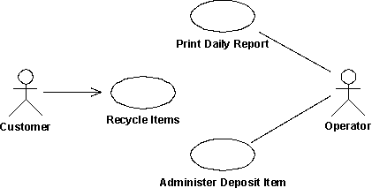
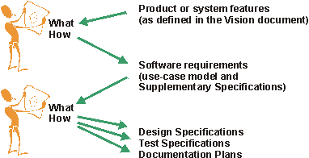
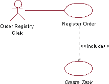
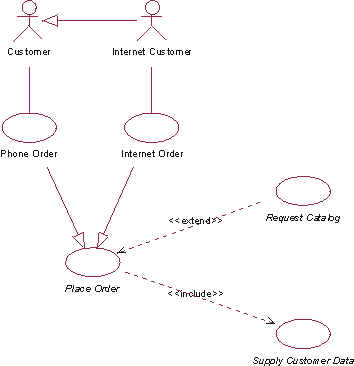
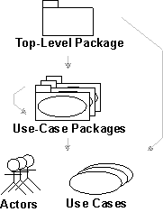

| Guideline: Use-Case Model |
 |
|
| Related Elements |
|---|
ExplanationA use-case model is a model of the system's intended functions and its surroundings, and serves as a contract between the customer and the developers. Use cases serve as a unifying thread throughout system development. The same use-case model is the result of the Requirements discipline, and is used as input to Analysis & Design and Test disciplines. The diagram below shows a part of a use-case model for the Recycling-Machine System.
 A use-case diagram, showing an example of a use-case model with actors and use cases. There are many ways to model a system, each of which may serve a different purpose. However, the most important purpose of a use-case model is to communicate the system's behavior to the customer or user. Consequently, the model must be easy to understand. The users and any other system that may interact with the system are the actors. Because they represent system users, actors help delimit the system and give a clearer picture of what it is supposed to do. Use cases are developed on the basis of the actors' needs. This ensures that the system will turn out to be what the users expected. How the Use-Case Model EvolvesBoth the actors and the use cases are found by using the requirements of customers and potential users as vital information. As they are discovered, the use cases and the actors should be briefly described. Before the use cases are described in detail, the use-case model should be reviewed by the customer to verify that all the use cases and actors are found, and that together they can provide what the customer wants. In an iterative development environment, you will select a subset of use cases to be detailed in each iteration. See also Task: Prioritize Use Cases. When the actors and use cases have been found, the flow of events of each use case is described in detail. These descriptions show how the system interacts with the actors and what the system does in each individual case. Finally, the completed use-case model (including the descriptions of use cases) is reviewed, and the developers and customers use it to agree on what the system should do. Avoiding Functional DecompositionIt is not uncommon that the use-case model degenerates into a functional decomposition of the system. To avoid this, watch for the following symptoms:
To avoid functional decomposition, you should make sure that the use-case model helps answer questions like:
Non-Functional RequirementsIt is quite easy to see that use cases are a very good way of capturing functional requirements on a system. But what about the non-functional requirements? What are they and where are they captured? Non-functional requirements are often categorized as usability-, reliability, performance, and substitutability-requirements (see also Concept: Requirement). They are often requirements that specify need of compliance with any legal and regulatory requirements. They can also be design constraints due to the operating system used, the platform environment, compatibility issues, or any application standards that apply. In general, you can say that any requirement that does not allow for more than one design option should be regarded as a design constraint. Many non-functional requirements apply to an individual use case and are captured within the properties of that use case. In that case, they are captured within the flow of events of the use case, or as a special requirement of the use case (see Guideline: Use Case). Example: In the Recycling-Machine System, a non-functional requirement specific to the Return Deposit Items use case could be: The machine has to be able to recognize deposit items with a reliability of more than 95 percent. Often the non-functional requirements apply to the whole system. Such requirements are captured in the Supplementary Specifications (see Artifact: Supplementary Specifications). Example: In the Recycling-Machine System, a non-functional requirement that applies to the whole system could be: The machine will allow only one user at a time. The What Versus How DilemmaOne of the more difficult things is to learn how to determine at what level of detail the use cases should "start and end". Where does features start and use cases begin, and where does use cases end and design begin? We often say that use cases or software requirements should state "what" the system does, but not "how" it does it. Consider the following graph:
 One person's destination is another's starting point. Depending on your background, you will use a different context to decide what you think is "what" and what is "how". This needs to be taken into consideration when determining whether or not a certain detail should be left out of the use-case model. Concrete and Abstract Use CasesThere is a distinction between concrete and abstract use cases. A concrete use case is initiated by an actor and constitutes a complete flow of events. "Complete" means that an instance of the use case performs the entire operation called for by the actor. An abstract use case is never instantiated in itself. Abstract use cases are included in (see Guideline: Include-Relationship), extend into (see Guideline: Extend-Relationship), or generalize (see Work Product Guideline: Use-Case-Generalization) other use cases. When a concrete use case is initiated, an instance of the use case is created. This instance also exhibits the behavior specified by its associated abstract use cases. Thus, no separate instances are created from abstract use cases. The distinction between the two is important, because it is concrete use cases the actors will "see" and initiate in the system. You indicate that a use case is abstract by writing its name in italics. Example:
 The use case Create Task is included in the use case Register Order. Create Task is an abstract use case. In the Depot-Handling System the abstract use case, Create Task, is included in the use case Register Order. When Register Order is initiated, an instance of Register Order is created that, apart from following Register Order's flow of events, also follows the flow of events described in the included use case, Create Task. Create Task is never performed by itself, always as a part of Register Order (or any other use cases in which it is included). Create Task is therefore an abstract use case. Structuring the Use-Case ModelThere are three main reasons for structuring the use-case model:
Structuring is, however, not the first thing you do. There is no point in structuring the use cases until you know a bit more about their behavior, beyond a one sentence brief description. You should at least have established a step-by-step outline to the flow of events of the use case, to make sure that you decisions are based on an accurate enough understanding of the behavior. To structure the use cases, we have three kinds of relationships. You will use these relationships to factor out pieces of use cases that can be reused in other use cases, or that are specializations or options to the use case. The use case that represents the modification is called the addition use case. The use case that is modified is called the base use case.
You can use actor-generalization to show how actors are specializations of one another. See also Guideline: Actor-Generalization. Example: Consider part of the use-case model for an Order Management System. It is useful to separate ordinary Customer from Internet Customer, since they have slightly different properties. However, since Internet Customer does exhibit all properties of a Customer, you can say that Internet Customer is a specialization of Customer, indicated with an actor-generalization. The concrete use cases in this diagram are Telephone Order (initiated by the Customer actor) and Internet Order (initiated by Internet Customer). These use cases are both variations of the more general Place Order use case, which in this example is abstract. The Request Catalog use case represents an optional segment of behavior that is not part of the primary purpose of Place Order. It has been factored out to an abstract use case to simplify the Place Order use case. The Supply Customer Data use case represents a segment of behavior that was factored out since it is a separate function of which only the result is affecting the Place Order use case. The Supply Customer Data use case can also be reused in other use cases. Both Request Catalog and Supply Customer Data are abstract in this example.
 This use-case diagram shows part of the use-case model for an Order Management System. The following table shows a more detailed comparison between the three different use-case relationships:
Another aspect of organizing the use-case model for easier understanding is to group the use cases into packages. The use-case model can be organized as a hierarchy of use-case packages, with "leaves" that are actors or use cases. See also Guideline: Use-Case Package.
 This graph shows the use-case model hierarchy. Arrows indicate possible ownership. Are Use Cases Always Related to Actors?The execution of each use case includes communication with one or more actors. A use case instance is always started by an actor asking the system to do something. This implies that every use case should have communicates-associations with actors. The reason for this rule is to enforce the system to provide only the functionality that users need, and nothing else. Having use cases that no one requests is an indication that something is wrong in the use-case model or in the requirements. However, there are some exceptions to this rule:
The Survey DescriptionThe survey description of the use-case model should:
Example: Following is a sample survey description of the Recycling Machine's use-case model: This model contains three actors and three use cases. The primary use case is Recycle Items, which represents the main purpose of the Recycling Machine. Supporting use cases are:
|
© Copyright IBM Corp. 1987, 2006. All Rights Reserved. |